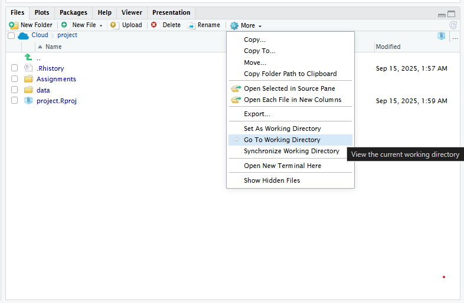

We have seen how to access datasets contained in packages, but to analyze your own data you will need to load it in the RStudio environment.
We will look in what follows at a few examples of loading data in different common formats (text files in general, excel files, files in SPSS format, R files).
Working directory and paths in R
Before entering into the details on the read and write of files, it is important to understand where the files are located and how to provide paths in R.
Paths for files in R are relative to the “Working Directory”. To know which is the working directory, you can use the function getwd() or select the option “Go to working directory” in the files tab.

The paths of a file are relative to that directory. Considering this, in the examples and assignments in this course, we will load data in the /data folder as follows:
'./data/FILE_NAME'
The ./ in the path above indicates the working directory.
When running commands loading or saving files, take care that you indicate the path correctly if you get an error.
Reading data from files
We cover below examples for importing data in R, covering the most common methods and packages.
Data from text files
The most generic function to read data from a text file is read.table() . The arguments allow to define if the data includes a header (i.e. a first row with the names of the columns/variables) and the separator used.
For example, let’s load a file in the /data directory containing the sample dataset from the previous exercise using the function below:
Many experimental data is saved in a text or CSV (Comma separated) file. The best method to read data from these files is to use the read_csv() function in the readr package.
Let’s see an example of usage loading the file in the /data directorate “ELP_full_length_frequency.csv” with data from a psycholinguistic study on the reading comprehension of words as a function of frequency part of the English Lexicon Project, described in the the Winter (2019) textbook Chapter 4.1.
As you can see, the file was loaded with 33,057 observations!
To free up memory, let’s remove the variable from the workspace using the rm() function (remove):
rm(data_sample_csv)
If your data is tab-separated, you can use the function read_tsv() . By default, the functions expect that the first row contains the names of the columns/variables to be read. If that is not the case, you should modify the argument col_names = FALSE .
Data from Excel files
The best way to read Excel files is using the readxl package. If your file has several worksheets, you can use the sheet argument to specify either an index or the name of the worksheet to read.
# load librarylibrary(readxl)# Using readxldata_sample_excel <-read_excel("./data/sample_wg1_excel.xlsx", sheet =1)data_sample_excel
Data can also be saved and loaded in R format directly. This is useful if you are performing your analysis in R to save data intermediate steps as it is a compact and efficient format, even though to share with other researchers and in open access journals you should export it to a more generic format.
To illustrate again let’s load a file in the /data directory containing a sample real dataset from a Event Related Potential (ERP) study that we will use in some of the exercises in the course:
The haven package can be used to read directly .sav files from SPSS.
As an example again, let’s open a file saved in SPSS from another ERP (Event Related Potential) study of code-switching in Dutch.
# If not yet available, install the package using install.packages("haven")# Load librarylibrary(haven)data_sample_spss <-read_sav("./data/EEG_DataSet_LongFormat_pablos.sav")head(data_sample_spss)
Again to preserve memory, let’s clean the workspace by removing the variables we created using :
rm(data_sample_spss, data_sample_r)
Other formats
In your own research, if you have data in other specific formats, you may have to develop your own function to read it, although it is highly likely there is already a solution available. Always search first in the internet… For example, imagine you have data in a file saved in the software Matlab, typing “read Matlab files in R” in any search engine points to the R package R.matlab that offers the functions readMat() and writeMat() to read and write respectively Matlab files.
A few examples of useful packages for data reading in linguistics research are listed below:
Includes import functions for EEG files from several EEG acquisition and analysis software suites: ‘BioSemi’ (.BDF), ‘Neuroscan’ (.CNT), ‘Brain Vision Analyzer’ (.VHDR), ‘EEGLAB’ (.set) and ‘Fieldtrip’ (.mat)
Package to access data in the childes-db, an open database of child language datasets from the CHILDES (Child Language Data Exchange System) data bank.
Saving data
Similar functions to the ones discussed above are available to save data in different formats:
Save to R format: saveRDS()
Save to text format: write.table()
Save to Excel format: several packages are available, but I recommend using the writexl package that does not depend on other elements being installed in your computer. The function write_xlsx() can be used to save an excel file.
Save to SPSS format: write_sav() from the haven package
Winter, Bodo. 2019. Statistics for Linguists: An Introduction Using r. Routledge.